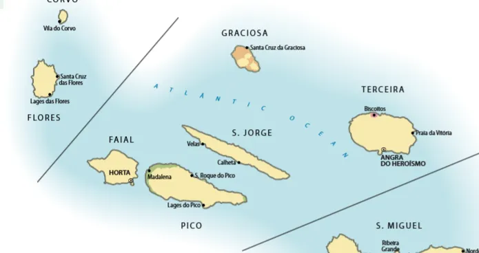
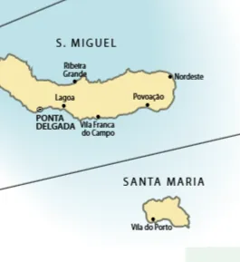
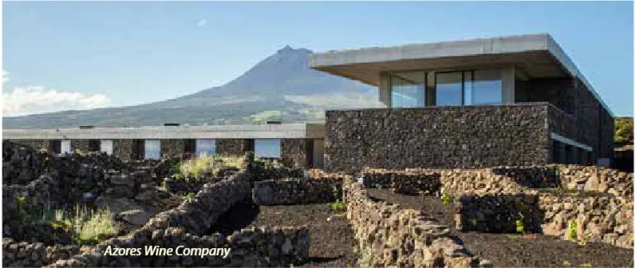

Kapitel 4 · Die portugiesischen Weinregionen
Weinregion Açores (Azoren)
Kennzahlen (2022)
Rebfläche: 1.708 ha
Gesamterzeugung: 4.487 hl (2020/21)
Durchschnittsertrag: 1.400 Liter/ha
Geschichte
Die Besiedlung dieser Inseln begann zwischen 700 und 850 n. Chr., 700 Jahre früher als die Schriftquellen nahelegen. Nach der Entdeckung der atlantischen Inselgruppe unter König Afonso V. ließ sein Onkel Heinrich der Seefahrer auf Kreta Reben ausgraben, um sie zuerst auf Madeira und dann auf den Azoren heimisch zu machen. Ziel war es, den bedeutenden Markt der griechischen Likörweine zu erobern und dabei die Lage der Inseln an den internationalen Schifffahrtsrouten über den Atlantik zu nutzen. In Currais (Steinmauergevierten) gepflanzt, die die Reben vor dem Wind schützten, gediehen die Weinberge. Anfang des 16. Jahrhunderts vervollkommneten Karmeliter- und Franziskanermönche erfolgreich ihre Techniken in Weinbau und Weinbereitung. Im 19. Jahrhundert war der Export auf 20.000 Pipas gestiegen, und die Weinberge bedeckten über 2.000 Hektar. Der Kontakt zur Hanse, der Export über eine eigene „Feitoria“ (Handelsniederlassung) nach Brasilien und der Handel mit England und Russland, wo der Pico-Wein als Wein der Zaren galt, zeugen von einer hervorragenden Handelsorganisation. Ab 1852 zerstörten die amerikanischen Plagen den Weinbau. Qualität und Ansehen der Azorenweine sind seit Langem anerkannt; das ist der Hauptgrund dafür, dass drei von ihnen – Pico, Graciosa und Biscoitos – die Einstufung DOC (Denominação de Origem Controlada – kontrollierte Ursprungsbezeichnung) erhielten.

Weinbauregion IGP Açores · DOP Graciosa · DOP Biscoitos · DOP Pico
Terroir
Quelle: https://www.europarl.europa.eu/RegData/etudes/STUD/2015/567667/IPOL_STU(2015)567667_EN.pdf
Die Inselgruppe vulkanischen Ursprungs liegt am Schnittpunkt dreier der größten tektonischen Platten. Der Vulkan Pico auf der gleichnamigen Insel ist der höchste Berg Portugals (2.352 m über dem Meer). Der warme Golfstrom hält die mittlere Meerestemperatur zwischen 16 °C und 25 °C. Das Klima ist geprägt von regelmäßigen Niederschlägen über das ganze Jahr (1.930 mm), mit stärkerem Regen im Herbst und Winter, und einem kurzen Sommer (Juli–August), mit Temperaturschwankungen durch regelmäßige Wetterereignisse wie Stürme, starke Winde und katastrophale Starkregen. Die Böden der Azoren sind relativ jungen vulkanischen Ursprungs, recht flachgründig und bestehen aus Basalten, Trachyten, Andesiten und tonigen Formationen; sie unterscheiden sich damit deutlich von den Terroirs des Festlands. Der Boden wird künstlich mit vulkanischer Asche verbessert, die örtlich „Bagacinho“ heißt.
Klima: Die Azoren sind vom Atlantik umgeben und stehen unter maritimem Klimaeinfluss. Kennzeichnend sind starke Winde, aber auch milde Temperaturen mit geringen Tages- und Jahresschwankungen, Niederschlag und meist hohe relative Luftfeuchtigkeit. Das trockenere Gebiet westlich des Pico (Madalena und Criação Velha) war und ist das günstigste für den Weinbau. Die Frontniederschläge werden im Inselinneren durch Steigungsregen verstärkt (DREPA 13/88). Die klimatische Situation wird durch die Currais bestimmt: Die meist 1 Meter hohen Steinmauern schützen die Reben vor Wind und Salz und speichern zugleich etwas Wärme, sodass sie wie eine Art Gewächshaus wirken.

Klassifikation nach Köppen-Geiger: Das Klima gehört zur Klimagruppe C (gemäßigtes Klima) (Csb und Cfb), also ein gemäßigtes Regenklima mit trockenen Sommern bzw. ein gemäßigtes, ganzjährig feuchtes Regenklima mit mittleren Durchschnittstemperaturen.
Die Durchschnittstemperaturen liegen angenehm bei etwa 13 °C im Winter und 24 °C im Sommer. Die Tagestemperaturen schwanken je nach Jahreszeit meist zwischen 14 °C und 25 °C. Temperaturen über 30 °C oder unter 7 °C sind weitgehend unbekannt; wegen der hohen Luftfeuchtigkeit (70–80 %) kann es sich im Sommer jedoch heißer und im Winter kälter anfühlen.
Mittlerer Jahresniederschlag: Auf Santa Maria (der südöstlichsten Insel) fallen weniger als 800 mm im Jahr, auf São Miguel über 900 mm. Weiter westlich, auf Terceira, übersteigt der Niederschlag oft 1.000 mm im Jahr. In den Sommermonaten Juni bis August ist Regen seltener, doch gibt es im Mittel noch an 5–7 Tagen im Monat Schauer. Im Allgemeinen entfallen 75 % des Jahresniederschlags auf die Monate September bis März.
Die Sonnenscheindauer der Inseln ist gering, im Jahresmittel etwa 35 Prozent. Das entspricht wegen der Bewölkung rund 1.600 Sonnenstunden im Jahr, denn von Oktober bis April ist der Himmel oft stärker bewölkt und die Tage sind meist ein Wechsel aus Sonne und Regen.
Der Wind, einer der größten Feinde der Rebe, weht auf Pico vorwiegend aus West bis Südwest. Kaum ein Jahr vergeht ohne Böen von mehr als 100 Kilometern pro Stunde.
Geologie und Bodenkunde:
Die Inselgruppe der Azoren liegt mitten im Atlantik zwischen 37° und 39,5° nördlicher Breite, rund 1.600 Kilometer von der Küste des portugiesischen Festlands entfernt. Von den neun Inseln der Azoren tragen drei Weinberge: Terceira, Pico und Graciosa. Ihr ungewöhnlicher Bodentyp unterscheidet sich deutlich von den Böden des Festlands.
Zwei Bodentypen herrschen vor: Der Lajido besteht vor allem aus unveränderten Decken des Grundgesteins, während der Biscoito stärker verwittert ist und eine Schicht zerfallener vulkanischer Schlacke trägt. Bei Neupflanzungen wird der Boden künstlich mit vulkanischer Asche („Bagacinho“) verbessert. In der Kontaktzone der Nordamerikanischen, Eurasischen und Afrikanischen Platte gelegen, sind die Azoren relativ jungen vulkanischen Ursprungs, mit Andesiten und tonigen Formationen. Alte, durch Currais geschützte Weinberge liegen auf extrem dünnen, manchmal gar keinen Böden; die Reben wachsen direkt in Spalten des felsigen vulkanischen Untergrunds, wo andere Kulturen kaum gedeihen würden. Das gilt für Lajido- wie für Biscoito-Böden. Chemisch weisen die Böden von Pico höhere Phosphor- und Kupferwerte und geringere Gehalte an organischer Substanz auf, mittlere Kaliumwerte, hohe Mangan- und sehr hohe Eisen-, Zink- und Borwerte (Analyse der UTAD).
Höhe der Weinberge: Traditionell liegen die Curral-Weinberge direkt an der Küste und reichen landeinwärts bis auf 200 Meter Höhe (Quelle: Ribeiro, A. (2021). O perfil de aminoácidos de vinhos das castas autóctones dos Açores: Arinto dos Açores, Verdelho e Terrantez do Pico [Masterarbeit, Universidade de Évora]. Repositório Científico da Universidade de Évora. http://hdl.handle.net/10174/29827).
Erzeugte Weintypen
IG-Weine Açores bzw. Landweine Açores:
Rot und Weiß. DO-Weine Biscoitos und Pico (VLQPRD): weißer Likörwein.
DO-Wein Graciosa: Weiß.
Regionale Kontakte
Technische Informationen: Comissão Vitivinícola dos Açores (Weinbaukommission der Azoren), Av. Machado Serpa, 9950-321 Madalena, Pico, Tel.: 292 623 605/6
Weintourismus: Azoren-Weinroute, www.vitiviniculturaatlantica.com; Tourismusportal der Azoren: www.azorestourism.com
Kulturelle Informationen zum Wein der Region: Confraria do Vinho do Pico (Pico-Wein-Bruderschaft); Gabinete Técnico da Paisagem da Cultura da Vinha da Ilha do Pico, GTPCVIP (Fachstelle für die Weinbaulandschaft der Insel Pico) – eine Einrichtung des Naturparks Pico; Museu do Vinho dos Biscoitos (Weinmuseum Biscoitos), Canada do Caldeiro, 9760-051 Biscoitos, Praia da Vitória, Insel Terceira; Tel.: 965 667 324,
Website: www.casaagricolabrum.com; Museu do Vinho do Pico (Weinmuseum Pico), Rua do Carmo Toledo, 9950-364 Madalena, Insel Pico, Tel.: 292 672 276.
Hochschulen und Weinbauforschung: Universidade dos Açores, Campus Angra do Heroísmo, Rua Capitão João d’Ávila – Pico da Urze, 9700-042 Angra do Heroísmo, Açores, Portugal, Tel.: 295 402 200.
Zertifizierungsstelle: Comissão Vitivinícola dos Açores, Av. Machado Serpa (Edifício do Serviço de Desenvolvimento Agrário do Pico) 606 – Tel.: 292 623 605/6, 9950-321 Madalena, Pico, E-Mail: info@cvracores.pt
Informationen zu Erzeugern und Abfüllern:
http://www.ivv.min-agricultura.pt/np4/1736.html, Jahrbuch S. 266.
Botanik (Biodiversität) und zugelassene Sorten
Rechtsgrundlage: Ministerialerlass Nr. 853/2004, VO (EG) 1493/99.
Rotweine: Agronómica, Aragonez (Tinta Roriz), Cabernet Franc, Cabernet Sauvignon, Castelão (Periquita), Complexa, Merlot, Pinot Noir, Rufete, Saborinho, Tinta Barroca, Touriga Franca, Touriga Nacional, Vinhão und Gewürztraminer.
Weißweine: Arinto (Pedernã), Bical, Chardonnay, Fernão Pires (Maria Gomes), Galego Dourado, Generosa, Gouveio, Malvasia, Malvasia Fina, Moscatel Graúdo, Riesling, Rio Grande, Seara Nova, Sercial (Esgana Cão), Tália, Terrantez, Verdelho und Viosinho. Arinto do Pico.

Renommierte Weingüter
in der Region:
Den Markt für den regionalen Verbrauch und den Durchgangshandel hatten bis vor wenigen Jahren die amerikanischen Hybridreben zurückerobert. Beim ersten Wiederaufbau von Weinbau und Weinbereitung wurden die heliothermischen Eigenschaften bei der Auswahl neuer Rebsorten, die sich an andere Anbaubedingungen anpassen mussten, offensichtlich nicht richtig berücksichtigt; ebenso wenig verstand man die Notwendigkeit, die Currais durch andere Windschutzformen zu ersetzen. So führte die Umstrukturierung leider nicht zum gewünschten Ergebnis. Zwar entstanden interessante Weine wie Biscoitos und Graciosa, doch die Erträge waren geringer. Dennoch haben die Etiketten der Cooperativa do Pico und die innovativen Weine der Kellerei Curral de Atlantis gezeigt, dass die berühmten Azorenweine durchaus eine Zukunft haben. Andere Winzer nutzen Fördermittel zur Erhaltung des traditionellen Weinbaus in Currais, was wirtschaftlich nicht tragfähig ist, oder pflanzen die Hybriden Jacquez oder Cunningham neu. Cooperativa Vitivinícola da Ilha do Pico (CVIP) – Picowines C.R.L.

Der älteste Weinerzeuger der Azoren, 1949 auf Betreiben von Erzeugern gegründet, die die edlen Rebsorten und den Rebbau in Steinmauergevierten wiederbeleben wollten, die heute eine von der UNESCO als Welterbe eingestufte Landschaft bilden. Die Genossenschaft hat 280 Mitglieder und erzeugt eine halbe Million Liter Wein; sie wird durch Fördermittel unterstützt, die ihr das Überleben ermöglichen. Azores Wine Company: Dieses Gemeinschaftsunternehmen, ein Projekt des vielfach ausgezeichneten Winzers António Maçanita, hat eigene Weinberge auf vulkanischem Boden am Nordwesthang der Insel Pico in Criação Velha sowie eine neu gebaute Kellerei mit Restaurant und Hotel. Die alten Reben des ursprünglichen Weinbergs sind größtenteils die autochthone Arinto dos Açores (>95 %), gepflanzt auf kleinen Parzellen von 0,89, 0,6 und 1,4 Hektar. Bis 2020 hatte die Azores Wine Company 1.000 Hektar Reben wiederbelebt – eine Leistung, die aber nur gut 15 % der Fläche entspricht, die früher auf der Insel mit Reben bepflanzt war. Das Unternehmen setzt auf Weinberge in Currais (windgeschützten Steinmauergevierten) und auf die traditionellen Rebsorten aus der großen Zeit des Pico-Weins im 18. Jahrhundert.
Curral de Atlantis – Sociedade Vitivinícola, Lda.
Das Unternehmen wurde 1995 von Jorge Böhm und Manuel Faria auf der Insel Pico gegründet. Ursprüngliches Ziel war es, in Zusammenarbeit mit der Universität Évora und dem Önologen Paulo Laureano das önologische Potenzial von 24 verschiedenen, überwiegend autochthonen Rebsorten zu untersuchen. Heute gehört das Unternehmen der Familie Faria und hat derzeit 42 Hektar Erzeugung, die auf den Inseln und in verschiedenen EU-Ländern verkauft wird. Die Adega Cooperativa dos Biscoitos wurde 1999 in der Gemeinde Biscoitos auf Terceira gegründet; sie hat derzeit 60 Mitglieder.
Casa Agrícola Brum, Lda. – Insel Terceira; Adega Cooperativa da Graciosa e Terra do Conde
Adega Czar – Sociedade Unipessoal, Lda.